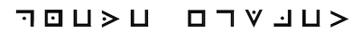

Current Version 1.0.1
Copyright © 2012 by Dave Thompson, Inc.
All rights reserved including the right of reproduction in whole or in part in any form.
Dreams & Journeys Online Information
ISBN: 9780983567714
LCCN: 2010929905
World Uniting Press is a division of World Uniting, providing perspective to the majority on behalf of those who are marginalized by current religiously and socially conflicting issues.
Visit us at worlduniting.org
Contact us at:
P.O. Box 7407
Tacoma, WA 98417
press@worlduniting.org
Chapter Three: The Room of Preparation
Chapter Four: Revelation’s Art
“Dreams & Journeys: The Cathedral (Part One)” is a work that was written for the purpose of introducing a very basic notion of what is commonly called the Christian worldview. It is an allegorical story set in the dreams of the main character, the Traveler.
This work came largely from my own desire to walk through and clarify my own faith (a never ending journey) as I have come to understand it through the collection of writings commonly called “The Bible.” That said, I also had hoped to fashion a creative and imaginative means to contemplate what are often very complicated concepts in this belief system.
Each of the characters the Traveler encounters are meant to represent ideas and conversations regarding basic concepts from this worldview. The dialogues between the characters also serve to address what are commonly asked questions of this belief. These are not meant to be elaborate discussions, but rather serve to facilitate the consideration of such matters and provide a hopeful path toward exploration.
It is my grave request that the reader extend me the liberty of errancy in this work. Like all other persons, I am seeking to journey toward what is an unrelenting conundrum: the certainty of truth. Still, though the journey may be immeasurably complicated, the benefit of its challenge is unmistakable. I pray others will continue to unceasingly champion the same journey.
Last, I would ask the reader to forgive the use of the masculine gender in reference to the "creator" in this work. It was a choice for poetic convention. In point of fact, within the Judeo-Christian worldview, the creator has never referred to “himself” as being male, or female, but wonderfully, as our human history records it, only as “I AM.”
Thank you for your consideration of this work. May God continually grant us the patience, empathy, and fortitude to valiantly maintain our often regrettably outgrown child-like curiosity, and so never apologize for unceasingly using the word “Why?”
It was by way of slumber that I happened upon fate, this journey, my pilgrimage of thought. Had heaven held her vision in any other manner, I would never have gained her favor. Such was my bequeathed fate, suffered upon by angels of enlightenment destined to be marooned somewhere between misery and fortune.
Now to account the acrid subtleties which burned so brilliantly in my mind. Heaven spoke to me and her wage required revelation.
Darkness was all I perceived at first: empty, cold, and alone. Expanse extending within expanse and endlessness extending within endlessness. Nothingness was not as I had imagined it, as something to be witnessed; it was nothing, if that were possible. I pained to find its end and cried out in a void which swallowed my sound and hid it in its shroud. I gasped at the silence, drawing in a crushing realization of sorrow, for I was without, with no one to hear, nothing to consider, and alone.
Then, either for fear or for flight I found myself stepping forward. Beneath my feet I discovered there was some surface to walk upon. Relieved to find a method of escape I began to move ever more quickly with each step. Sounds of voices echoed from distant places, calling from the darkness, saying words I could not comprehend. The air was crisp, dry and thin. It seemed to produce a great thirst in me as I walked on and on.
Whereas, at first, all I could distinguish was darkness, soon my eyes adjusted. I perceived in the distance small glimmers of light that seemed to flicker and move. In fact, as I focused more clearly on one directly ahead of me I noticed it was moving closer and closer to me. I immediately stopped walking and became at once afraid of what may be causing this light to approach.
Soon I discovered that it was not a light, but a flame which came from a lamp held by some person approaching. I stood perfectly still hoping that they would not see me in the darkness but would pass me by. I would have preferred the naivetè of the darkness to this mystery. Instead, they came upon me with great speed, until they were suddenly before me.
“Come with me, Traveler,” said the voice of a young child.
I had not expected to hear a child’s voice. This was a place of darkness. It seemed unusual, even unsafe for such a young person. The child was clothed in a robe which seemed a radiant white against the light of the flame. But as it came closer I discovered that its face was of no particular beauty, but instead seemed scarred. Unsure of the reality of this apparition I reached out and felt before me to test its truth.
“Take my hand,” spoke the child as it reached out toward me.
The cold fingers grasped my hand tightly. My skin prickled with fear. I tore my hand away and jumped back, shouting in a trembling voice, “Who... What are you?!”
“I am a traveler like yourself. I offer you understanding, but you must come with me. Do not linger here or you will become like the voices you hear in the distance. I have come for them too, but they have not followed. Will you come?”
“Who are you and why are you in this place? If I follow you where will we go?” I asked.
“It is not yet time for you to ask these questions, but I will lead you to a place where darkness cannot hide. There you will ask the questions you desire, but for now you must trust. Yes. Do not trust simply because I am here, or because I hold this meager light, but because I offer you this opportunity. Come now, you must be silent and attentive to my lead or I will lose you in this void.”
Heedfully I answered, “Then I will follow you - I want to be free of this place and I am curious to see where you will take me.”
So I reached out and took the cold hand. The young child began to lead me on through the darkness, stating, “Be mindful of your step, fellow traveler, for there are many sharp and treacherous things in this place.” We hastened stopping only briefly from time to time so the child could look upon a parchment of some sort; then we would quicken our pace again.
As before, I began to become quite thirsty from the dry air. I asked the child, “Please. Do you have even a small amount of water? Our walking and this air have made me quite thirsty.”
The child reached from within its robe and revealed a flask which shimmered a brilliant red against the lamp’s flame. “Drink this Traveler, it will quench your thirst for now. But soon you will journey to a place where you will gather your own.”
I took the flask from the child and placed it to my lips to drink. I was surprised to find the contents to be warm in this cold place, tasting sweet as nectar, quenching my thirst with only a small sip. I gave the flask back to the child who hid it away and quickly led us on.
As we continued I began to distinguish a brighter light off in the distance, though it seemed clouded in the darkness. It was originating from a building. The brilliance emanating from it seemed to reach out to me. I felt as if it was calling me, drawing me to it.
To my greatest relief we came quickly upon it.
I found myself standing on the doorstep of a large stone building. I supposed it most resembled a cathedral, yet there was no air of grandeur, nor did it tower like the many cathedrals I had witnessed before. It was quite plain by sight, almost purposefully so. In fact it seemed to wink its portrayal with a sort of irony, as if to mock the very contents that it held.
I had become so enthralled with the building that I had not noticed: the hand and the young child that had led me were nowhere to be seen.
“Traveler, why have you come?” bellowed a voice that caused the hair on my neck to bristle. There was a guard just to the left of the door that I had not seen. He was suited in an armor that seemed to hide itself in the stone of the building. Had he not spoken, I would not have seen him standing there.
“I do not know where I am sir, or why I am standing upon this doorstep. I have surely fallen into a deep and troubling sleep from which only heaven may now awaken me.”
“From where have you come?” he asked.
“Sir, I have come from a place of emptiness. I was gripped in the pull of darkness and chaos. I have never felt such aloneness and despair. A young child took my hand and led me to this place. And now I have come upon it and find myself here before you.”
Almost as soon as I stopped speaking he began, “It is from the chaos that you came. All persons have come from nothingness. It is our commonness and it is yours as well. You are and that is your beginning. Now from here journeys your responsibility and from here determines your understanding.”
“But sir,” I asked, “I do not know who you are or where I am. I have only just now come upon this building and have found it to be of such a curious luster. I feel it begs me to enter. I...”
The guard interrupted, in an almost annoyed tone, “I too am a traveler, one who has been tasked to give watch to this dwelling: to see that none should enter, except they be qualified and worthy; to guard against those who would claim falsely their cause. These doors will open for no person except that they be worthy and that I shall agree.”
“I would enter, guard. For I am curious to know its contents.”
“Are you worthy?” he inquired.
“I am not,” I replied. At once, I was taken aback by my own honest speech.
He continued his questioning, “Do you trust?”
I did not understand what he asked me, but just as before the words came to me as if some stranger spoke in my stead. “I do not.”
“Then enter, and be received.” whispered the guard in low tones, difficult to hear.
“Tell me how I may enter?” I inquired.
“Upon the barren breast of honesty does a person begin their journey. They must not take any precious thing with them, but enter naked, except for the most modest form of covering. For they should not think that they possesses any one thing that is truly their own. Their feet must not be covered, lest they presume the path upon which they walk. They must enter without sight, lest they gaze upon that which appears only to the blinded.”
With sudden honesty I replied, “Then I am without, so I am afraid I cannot enter. For I am not now naked, nor are my feet uncovered, nor am I blind.”
“What you have spoken is honest and true. He who is from before our time needs no great person to see what you will see. It is his pleasure to entertain those meek of spirit. Yet, be mindful. If you enter this dwelling, if you see, if you understand, you will gain no indulgence. No. You will gain an eternal torture. For you will be the most restless and the most weary of persons. Bliss will never again be your lover. No. She will spite you as an enemy.”
He continued, “You may enter, but know this. There is only one owner of this building. He is the one whose name is with us. It is he we beheld, the one of a most barren breast. With our own eyes, we saw further light, and with our own hands, we touched three great lights. Upon this very threshold his name is commanded and to the one who wills it, a further truth awaits.”
I gazed upon the base of the door. Words in some unknown script were written upon it.

“Sir, I cannot read these words. They are in a language I have not learned.”
The guard explained, “The language is one covered from all men, except for those in hiding who are covered by a lamb’s sacrifice. With wisdom alone shall a person ever read its meaning.”
“Can you tell me what it means?” I exclaimed.
“I am only the guardian of this lodging who has been called to attend to your entrance.”
I pressed on, “Then, with eyes that are blind, thirsting for light, with ears that are longing for learning, and with a tongue starved for inquiry, guardian, I would enter.”
“Then enter into a pilgrim’s progress. Upon this door’s opening you will enter into the Room of Preparation. It is a shelter of darkness, empty of all light. In it you will rid yourself of all which you consider your possessions. Do not be afraid, but do as you are told. You will be a friend there, and will suffer no harm. The Deacon will see to your journey.”
Just as soon as he stopped speaking, he reached to the door, grasped the large cast-iron knocker and rapped on the door with a certain number of distinct knocks. I witnessed the door open with a slow and deliberate task. The hinges cried out as if to beg me to attend to their age and to their rare use. I could not see what lay within. Only darkness and uncertainty stood before me.
Fearful of the very uncertain path ahead of me, yet curious to gain entrance, I stepped across the threshold.
And so began my journey.
As I entered into darkness, the large door from whence came all light and my every knowledge, shut fiercely and tightly behind me. Again, as with the void before, I was overcome with the cover of darkness. It was more than the absence of light: I had no bearing. The endlessness of this place seemed to be without completion. There were no walls, no distance, no time, only darkness. Even the sounds of my own breath seemed to echo past the long halls of great cathedrals. All at once, I began to fear and mourn all that I had held familiar.
“Do not fear your loss,” came a voice, whether from a place distant, or near, I could not tell. “You are safe here, pilgrim. I am a traveler who has been tasked to oversee your journey. My name is Deacon.”
I inquired, “Is this not one building? From where shall I come, and to where shall I go?”
He spoke again, “Do not be led astray. Not all journeys lay along paths of stone. You are destined for greater and more noble travels. Kings and their fortunes have longed for lesser ways, but you shall travel further, you shall gather riches untold, yours will be destinations reached by mortal few. Once you have traveled, no wage will meet your worth. Though you are of low estate now, soon you will possess what no riches may afford. All persons, foolish as they are, will wonder at your wisdom, though this path requires only a heart of humility. But that is a cost too few will measure.”
He paused, then continued, “You are right to ask from where you come and to where you go. This is a place of preparation, and, unless a person consider their beginnings, they will never enter into this dwelling, nor the path to which you will wander. You will meet those who did not prepare as you will. They did not empty themselves of that which clouds their perception. They have lost their way. They aimlessly wander back and forth in this lodging, looking for wanderers to join them in their loss and loneliness. They are those who have neglected their journey and have dismissed the words of the great thrones. Consider your path and do not falter.”
Feeling a hand upon my shoulder, he continued, “As to where you are going, it is along the path of knowledge and understanding. You will behold four great thrones upon which are seated four apparitions of understanding. You will meet Revelation’s Art, Judgment’s Scale, Mercy’s Sorrow, and Virtue’s Quandary. These are our most trusted fellows, the pillars of our plan. You must hear their words and glean what you can from them. Learn, ask, and test them. They will withhold no understanding from you, but will speak as they have been commanded. Come now, let us set aside our conversation, and prepare you for your journey”
Feeling a bit more comforted, I inquired, “What is it I should do?”
As the hand was lifted from my shoulder, he said, “It is time now, pilgrim. Rid yourself of all your belongings. They are of no use here. They will only burden your journey.”
“But what will I wear?” I asked.
He continued, “Reach before you and find a tunic for your covering. It is a simple cloth, having no color and no image upon its fabric. You will enter into this journey with a simple purpose. This covering is given to you for your journey. It is to remind you that even the means to your basic covering are not of your own accord, but are given freely to you. Come now. Clothe yourself.”
So I removed of all that I had brought with me. Then I reached forward and found before me a single cloth of a length to cover my whole self from neck to ankle.
“Deacon, I have found this floor to be coarse and without comfort. May I have something to cover my feet?”
He retorted, “You must not. This path must be known to you, and, coarse as it is, you must continue to walk it. Kneel so that I may place this blindfold upon you.”
Plaintively I asked, “But, Deacon, why do I need to be blinded?”
He answered, “You must enter into this dwelling with no sight, except that which will be given to you. It is his delight to give sight only to the blind. Once you have asked, you will be given. For those who seek shall find.”
I knelt and was blindfolded. Then, upon standing, the Deacon took my arm and led me for what seemed far too great a distance for the building’s outward appearance. We paused for a moment. I heard a certain number of distinct knocks, and then the sound of a great door opening. We continued our pace and then, all at once, we stopped.
A great voice called, “Ask, and you will receive; seek, and you shall find; knock, and the door will be opened.”
Only silenced seemed to follow and I wondered if it was I who was supposed to speak. Hesitantly I replied, “Then I ask for sight, that I might see where I have been led, and to what end I have come.”
With a great clap, which echoed like thunder throughout unending caverns, my blindfold was removed. My eyes pained with the brilliance of light that poured over me. I had never known such a sight. The overwhelming intensity of it so overtook me that I worried I might not see anything at all, perhaps ever again.
Soon, to my relief, my eyes seemed to adjust. I discerned that I was in a great and vast chamber, whose ceiling appeared to reach upward into heaven itself, far too distant than it could have appeared from the outside. Before me sat four great thrones, one on each wall of the chamber. Before them, in the center of the room, rested a great white altar, upon which a large book was laid. The brilliant light that filled the room came flooding from the book. Great streams of light flowed from the book to the thrones. Each throne became illuminated by it, as if they drew their light from it. From the center of the book shone an even more brilliant column of light, which extended far into the heavens, to a distance beyond my ability to see.
The Deacon commanded me to look down upon my feet and not to look up until I was told. He then took my arm and led me in quite an odd and meticulous fashion. We moved forward, then sharply at right angles till we came directly before the first great throne. The Deacon took the staff from under his arm and rapped it on the floor in front of the throne a certain number of distinct times.
“Who comes here?” boomed a deep and foreboding voice.
The Deacon answered him, saying, “It is a traveler from without who desires sight.”
“Has he rid himself of all his possessions? Has he been prepared?”
“He has rid himself and he has been prepared?” affirmed the Deacon.
“Then let him ask as he will. I will hold no reserve, but will give as I have received. Look upon me, Traveler, and tell me what you behold.”
I looked up and saw the first great throne and the one who sat upon it.
“I see you, a man of old and tired stature, whose white hair and long beard give evidence to the many years in your possession. Your throne is of fine and meticulous masonry, scaled in what seems to be perfect dimension, made of the finest marble I have ever seen. Upon its base are engraved the words, ‘HE IS NOT SILENT.’ In your left hand you hold a brush with which you appear to be painting a beautiful landscape upon a great canvas. In your right hand you hold a pen with which you appear to be writing in a book. You are draped with what appears to be a cloth fit for the grave. Your eyes do not look upon either the painting, or the writing, but into the light that comes from the book which is laid upon the altar of this room. Neither have you diverted your sight even to gaze upon me.”
He replied, “You are most observant. This will serve you well. Ask as you will, for I will not reserve any one thing that I possess. He has commanded me to do so, and I must obey him. But unless a person ask, they will never know; and unless they ask the right question, they will never possess wisdom.”
“Then I will ask only as I can, for who knows what question is correct until they have tested its answer and found it to be of use. Who are you?” I asked.
With deliberate timing he spoke, saying, “I am Revelation.”
“What is your purpose?” I inquired.
“I have only one purpose, to reveal that which he commands of me and nothing else.”
I questioned further, “What do you paint with your left hand?”
Motioning his head slightly to the left he stated, “Come closer, and behold what I paint.”
I carefully approached the painting and gazed upon the most beautiful landscape I had ever seen. A vast expanse of land spread across the canvas, accenting spectacular vistas of forests and fields. As I gazed deeper into the painting I began to notice that there appeared to be wind blowing in the trees. Yes! The painting moved and was alive. It was as if I were not gazing at a painting at all, but at an actual landscape.
“It is real and alive!” I gasped.
“It is creation. Behold its beauty, its complexity. Is it not masterful?”
“It is beyond my description,” I breathed.
I felt a deep emotion of adoration come over me. I was gazing upon such a wonder of mastery. “Exquisite! But why do you show me this painting?” I asked.
Came his reply, “This is the creator’s art and all people see his painting. It is his masterpiece, the canvas of his reflection, his image, his character, and his being. Upon its constructs and forms are written the laws by which all persons fashion their governance and innovation.”
Revelation continued, “It is my testament, Traveler. He has commanded me to share it with you. See and understand. Think upon its structure and its form. Can you name its equal?”
I pondered. “I cannot, for there is no more masterful work than this that I have ever seen. I could not wager that any person might find or create its equal.”
Reflecting on the painting, I questioned, “Revelation, you have claimed that this mastery of creation and existence is by the hand of a creator. Might I ask how a person should know that it was in fact a creator who set them to work and order? People are certainly able to observe nature, to be astonished even at themselves as existing. Certainly they must be astounded at their own physical complexity. But, when considering their beginnings, couldn’t they consider that there may not have been a creator at all?”
“Traveler, if indeed you were to consider humanity as rational surely they would have to consider that there are only two possibilities when they look at the reality of their existence."
“Which two possibilities are those?” I inquired.
Revelation replied, pausing with deliberate emphasis, “That either existence had a beginning point and so something came from nothing, or that existence is without a beginning and so something is eternal.”
“I don't suppose it is reasonable to conclude that something came from nothing.” I reflected.
He continued, “Humanity is bound by the reality of what they observe and even what they can reason. They cannot escape the truth of it. And so they cannot escape this problem: that they are held captive to that which is beyond their reason and proofs, that there exists a necessary uncertainty, the unobservable and the unexplained. They are bound to the problem of the eternity of existence.” He raised his head in a scoffing fashion, “Vanity! That humans would presume there has been no greater being in all of eternity, in all of existence than themselves. Gazing upon their own timid galaxy, speculating their own solitary command. Such hubris”
“I suppose it is reasonable to consider that there is a being who has been around for longer than ourselves, and perhaps for so long as to be considered eternal from our limited point of view. Surely one who has been around for such length must possess greater knowledge and abilities than we,” I surmised.
“Yes, Traveler. And it is the eternal of existence who has left the imprint of himself, his very being, in his creation,” he answered.
“Then humanity is able to discover the creator from existence alone? Certainly this cannot be. For some would see the very beginnings and construction of existence to be by the hands of chaos and survival. Still others have fashioned entire constructs and diversions of belief from this order,” I pondered.
“Creation is incomplete, Traveler. It was not meant for such purposes. There are none who may prove the creator by his creation alone. For how can the creation prove anything except what is in their power to reproduce?”
Confused, I asked, “Then how can they know what you speak of? It does not seem like we are able to speak to this creator face to face, to prove his existence. He does not walk with us.”
Revelation hesitated and spoke in almost a whisper saying, “No. He does not walk with you, though he did once, a long time ago, before you stole yourselves from him. But that is not mine to disclose.” Then looking to his right he spoke saying, “It is not necessary to speak with the creator. He has not been silent, but has already spoken, yes, even demonstrated himself to you. Behold my right hand, and what I am writing.”
I walked over to his right hand and witnessed him writing words in a book. Just then I noticed that a few moments after he had written them, the words disappeared.
“I have seen the words you are writing, but they continue to vanish.” I stated, confounded.
“The words are those of the creator himself. They are possessed nowhere in creation, but are given from him and evidenced by his unique abilities. These are the frail words of those who have heard, who have seen and who have spoken of his wondrous and unique works. These words are written in the book which is laid upon the altar. I must keep my gaze upon it so I do not forget the words it contains. For just as soon as I write them, the words are being erased. And as soon as humankind is spoken to, they forget. They are a simple being who is easily turned, like a wave of the sea which is tossed about by the wind. Therefore the words of the creator must ever be before them, retold, and revisited. They are a forgetful creature and there are many who would offer their own words.”
Mystified, I rebutted, “Truly no person should refuse the words of their creator. But I must inquire how a person may judge what you write. There are many who write and many who speak. How can they discern that these words are accurate where others have spoken of their own account?”
“Your question is of great importance. He has not left you devoid in your quest. Behold the cloth that is draped across my body. It is a grave cloth, is it not?”
“Yes, I suppose it is,” I concurred.
“Traveler, how may the creator demonstrate to his creation that it is he who speaks and no other human in creation?”
Shyly, I guessed, “I suppose he must somehow prove it with some act, which no creature but the creator can do. But even if the creator performs such an act, will a rational person accept such a witness from another person? We can only judge the claims of others by what we can justify with evidence.”
“Indeed. Yet it was evidence that the creator has prepared and given. Do you not see the grave cloth that is draped over me? Has he not demonstrated such an act as no one in creation may perform? Has he not hastened history to pen the account of his own mastery over creation and death? For all must die, but none has ever lived again.”
I scoffed, “Resurrection?! It is not a probable event. We do not see it in all of creation. They will surely doubt its possibility.”
Revelation quickly spoke, “Yes. And rightly so, they are a creature purposed for such doubts. So unfortunate then that humanity might hasten such improbability, and spare no faith in their sole aspiration of chaotic origins. But the same scale of probability is locked tightly away when they consider the possibility of a creator. Understandably so. They know that a creator’s presence requires their contemplation. They instead choose not to consider, to their own loss, for their abstaining grieves the creator who longs for them.”
Doubtingly, I queried, “So then, if the Creator has actually spoken, proven his authority, and provided evidence, who can resist these words?”
“Do not be presumptuous, Traveler! These are not simple things. To those who are meek of nature, who desire to understand without protest, they are welcome. But to those of a stubborn will and a prudent mind, it is his great pride to welcome their inquiry. For Traveler, truth finds the greatest of worth in the mind of her sceptic.”
He sighed, leaning again to his right. “Recall the words that disappear. These words must always be shared, again and again. For they quickly forget. You, Traveler, must share it with them. But first, you must visit the others. They have much to share with you. You must ask all that you can of them, for they will answer.”
He continued, “Deacon, give him one of the scrolls I gave you. The creator is not silent and his words must be ever before this traveler. He is now tasked as I am, to write and to reveal. Now, take him to Justice. He has learned how the creator has spoken. Now he must learn the exacting of the creator’s scale.”
Then the Deacon pulled from beneath his robe a parchment made from what looked like animal skin and commanded me, “Take this scroll. It is yours.” He then took my arm and instructed me once more to gaze upon the floor. I did as he said, and found myself again walking in the strange pattern of angles that we had traveled before to meet Revelation.
We were walking for a great distance in the chamber. Being of such coarse nature, the floor began to pain my feet a great deal. In fact, it became almost unbearable. I turned to the Deacon and asked, “Please, Deacon, my feet are not used to this path and it is quite distracting. May I have some covering for them or perhaps slow my pace?”
The Deacon rebuked me, saying, “Do you find yourself to be of a quality greater than those who came before you, Traveler? They endured such triviality as you. Do you consider yourself of a nobler nature than those who suffered to the point of death for what you will gain? Be quiet! You will not be burdened beyond what you can bear. Do not look up again, but be mindful of your path.”
So I looked down upon my feet again as we continued, angle upon angle, to the next great throne.
At last, we came to a stop and again the Deacon took the staff from under his arm and rapped purposefully with it a certain number of distinct times.
“Who comes here?” spoke the tender voice of a woman.
Again, the Deacon answered, “It is a traveler who desires to learn of you.”
“Has he discerned Revelation’s Art?”
“He has asked and he has received and he seeks to ask again,” the Deacon responded.
“Then let him ask as he will, for I will hold no reserve but will give as I have received.”
Then she spoke to me, saying, “Look upon me, Traveler, and tell me what you perceive.”
I looked up and saw the second great throne and the one who sat upon it.
I began. “I see a young and beautiful woman, dressed in a brilliant white robe of fine linen. Your right eye appears to be a diamond of great purity and brilliance. Over your left eye there lays a covering of cloth that seems to conceal your eye’s absence. Your throne is of a most brilliant purity and seems to be carved from a single diamond. Upon its base are written the words, “EYE FOR AN EYE.” In your left hand you hold a scale in perfect balance that holds what appear to be two precious stones. On one side of the scale is a stone that resembles your right eye. On the other side there appears to be a stone of equal quality, but whose luster shines red. In your right hand you hold a shepherd’s rod. The arm that holds it is bound by three strong cords. In your lap there lies a large book with a pen which continues to write in its pages.”
“Traveler, know this. You may ask as you wish and I will reveal as I am able. But my knowledge and my task are without remorse.”
“Are you Justice?” I questioned.
“I am called Justice, for my purpose is just and right.”
“Forgive me, but why do you mention that your knowledge and task are without remorse?”
Patiently she replied, “Many have come before you, Traveler. You will meet them on your journey. Many have asked as you will and have heard what I share, but they have not desired to acknowledge its merit. The reality of it pains them for their actions are called into account and are no longer without consequence. Their disregard is foolishness and folly. They have not realized that their stubborn arrogance will not release them from my purpose.”
“What is your purpose, Justice?”
“I have been called to attend to the creator’s debts. He has tasked me to measure on the Scale of Right, to exact what is owed him, and to separate out those who have been written in his book,” she stated.
“Justice, may I ask who owes this debt to which you tend and how they have accrued it?”
“Behold the place where my eye once dwelt.”
“Yes. I see that it no longer remains and I find myself distraught to look upon it. How did you come to be in such a state?” I haltingly asked.
“It was humankind who reached out and plucked my eye from its place.”
Appalled, I questioned, “Justice, tell me. How is it that they have come to accomplish such a ghastly act?”
Looking down toward me she began, “The creator who fashioned their existence has from time immemorial lavished his affection upon them. It was his pleasure to attend to their creation. From the dust of the earth he intended them unique from all other creation, the greatest of his good and mastered work. Such was his devotion that he even cast their mold after the very likeness of his being, his person: being able to create and to reason, just as he.”
She continued, “They were given a most unique privilege among all of the creator’s creatures. Their's was the ability to choose freely their companionship to the creator. It was his decision to do so, for he longed to commune with a creature who could purpose to love him.”
Warily, I asked, “Justice, forgive me, but what manner of choice did humankind possess in their companionship with the creator? Choice would presume the presence of some option. But what option could they have chosen if they and all of creation were good? Love would presume the freedom and ability to act in some wrong manner toward someone.”
Pleased, she answered, “Your question is wise, Traveler. It was for that reason that the creator placed in the midst of his creation the measure for their choice, a tree which provided their ability to offend. It was this tree that the creator compelled them not to eat of. By so doing, he gave them the ability to demonstrate choice. Their act of agreement then demonstrated their desire to commune with and to love the creator. By doing so they would continue the joy of living in their state of creation. However, their choice to disregard this simple request would sever them from the creator’s ability to commune with them. It would introduce the misuse of nature, creating an unintended and injured state of creation.”
Justice continued, “So humankind desired what was not theirs to possess. Rather than seeing the tree for its purpose of choice and love for their creator, they were deceived. They fashioned in their mind that they would be governed by no one; though, the creator never desired to govern, only to commune. So they reached toward the tree and took from its fruit and ate of its consequence of offense. So they reached to the creator himself and tore from him the creature whom he loved. For the creator would no longer be able to dwell with them in their consequenced state of giving and receiving injury. It was then that humankind snatched the eye from me, and it was then that the cost of it was placed upon the Scale of Right.”
Looking back to the altar, she sighed, stating, “I, Justice, must now demand collection for what man has stolen, an eye for an eye. I will exact from humanity what they have taken: a creature without corruption and eternal.”
Confused, I asked, “But Justice, what person can pay such a cost? For who among us may claim to be without error?”
Nodding, she replied, “Indeed, Traveler. There is no person who may afford this debt.”
I pressed, “Then how will they pay what is owed their creator?”
“They must meet the cost, an eye for an eye,” she answered.
Shaken by her words, I whispered to myself, “This is a grim state. It is hard to reconcile a creator who loves his creation and yet would exact such a cost.”
Raising her voice, she chided, “Traveler, be warned! Have I not said that my knowledge and task are without remorse? Such humor humanity possesses, that they would beg for Justice! They beg not to be righted, but instead to blind and to be blinded. Let no one pray for Justice, for justice will be granted, and that forthrightly.”
Shaking her head she warned, “Do not be deceived. It was not the creator who has wronged humanity. It is humanity who has hastened their own demise. And such a cost: that all of creation should suffer from their selfish ambition. They caused the scale to be unevened and it is their debt to pay.”
Disconcerted, I looked over to her left hand and the scale in it. “Forgive me, but as I look upon the scale in your hand I do not find it to be uneven. Rather, it is in perfect balance. Your eye is on the one side; but on the other, a different gem of a red luster is placed.”
“Yes,” she breathed. “The scale has been evened and the debt reconciled.”
“But who has done this, Justice? Who has paid this debt? Who in all creation was even able,” I questioned, astounded.
Came her simple reply, “The creator himself.”
“But how did he do this?”
“He has reached up and plucked out his own remaining eye. For he alone, being eternal and without offense, was of such a nature to satisfy the debt. He took upon himself the form of his creature, permitting them to make payment with his own life. Understand, it is the eye of Mercy that lies upon the scale as payment. He has met an eye for an eye. What was perfectly demanded has been perfectly met.”
Almost speechless, I said, “Then humankind is free from their obligation?”
“Their debt has been met, but the creator has left it for man to decide. It is humanity’s choice to receive his gift of reconciliation just as it was humanity’s choice to refuse it. They are a creature of free choosing. The creator has always desired their love, not their obligation. Behold the rod which I hold in my right hand, and the book which lies upon my lap.”
“The rod appears to be a shepherd’s rod and the book is authored by a pen which appears to be writing names,” I observed.
Extending her arm, she urged, “Behold the Creator’s Staff. It is indeed a shepherd’s rod, for I have been tasked to separate the sheep from the goats, the wheat from the weed, yes, even the chosen from the nay-choosers.”
“Justice, who will you separate and when will this task be accomplished?” I wondered.
“I shall wield this staff soon Traveler. With its length I will reach out and call out all from creation who have trusted and reasoned what Revelation has demonstrated.”
Curiously, I inquired, “What will be your measure be for this?”
She replied, “I will call out those who have been written in this book: who have welcomed the creator as a friend, who have clothed the naked, fed the starving, taken-in the stranger, given drink to the thirsty: those who, like the creator, have been merciful and have not required a person’s sacrifice. The pen which you have seen writes the names of those who have taken Mercy's hand. Those who have been written have been reconciled. Their debts will not be counted against them. Neither will I exact the creator’s debt from them. No, theirs will be a reward.”
“Please, Justice,” I begged, “Why is your arm restrained? What are the three cords?”
Looking to her arm she noted, “They are the permissions of the other three thrones. Mercy must resist time no more. Virtue shall truly die. Revelation will lay down his brush and his pen. Upon that moment, my staff will move most quickly and accurately to attend to its purpose.”
Then to the Deacon she called, “Come. Deacon, give to him a new robe; pure and brilliant as the rightness of the creator himself. Truly, Traveler, he has reconciled you. Your debt has already been paid once and for all time. And when he extends his eyes upon you, upon his own rightness will he now gaze.”
“You have learned of my exactness and now must discern Mercy’s Sorrow, for the creator longs for his creation,” she finished.
The Deacon held open a robe of magnificent purity. I placed my arms into it. Then the Deacon pulled the hood over my head and tied the robe around my waist. He then took my arm and, again, commanded me to look down upon my path, reminding me that I should not look up, nor become distracted by anything around me.
Following his bidding, I looked down and saw my feet, which had now become swollen and blistered. I continued following the Deacon as he led me in the strange and confusing path, worried about the further truth which would befall me, toward Mercy’s throne.
As we walked, a sound just off to my side distracted me from my walk. It sounded as if a man were calling out, but too faint to comprehend. I lifted my head to see who shouted.
The Deacon scolded, “Do not look up, Traveler! You must not!”
Puzzled, I responded, “But Deacon, who calls so loud? Why can I not look upon him?”
Pulling me close, he torted, “Did I not warn you of those who wandered in this chamber? It is a traveler who has lost his way.”
“Deacon, surely they can come with me on my journey,” I implored.
“No,” he answered back, “This journey is yours and you must complete it. The moment that you prematurely end your journey, you will be truly lost. You must first meet the other thrones. Then you will be able to assist him and the others. They are distracted, and have cut short their journey. If you listen to them in your naive state you will surely be led astray.”
Belligerently he tested me stating, “Choose now, Traveler. Will you follow my lead?”
I was weary to walk, burdened by the knowledge I had gained. Curiosity, it would seem, had greeted me with no fine courtesy. No. Apathy, for the first time, held a sort of attraction and the fruit of it tempted me as it never had before. Were it not for the burden in my heart to ask of the remaining thrones I would have turned to meet the wandering traveler.
Exhausted, but anxious to continue, I replied, “I will follow, Deacon.”
With a short pause, his voice softening to a concern, “Then humble yourself, Traveler, and attend to my lead. I will guide you in a right path, for it is my duty to serve his will, and he desires for you to learn.”
We then continued along our path until we finally reached the next great throne. Again, the Deacon took the staff from under his arm and rapped it purposefully on the floor a certain number of distinct times.
“Who comes here?” came a voice which sounded remarkably similar to the voice of Justice.
The Deacon answered, “It is a traveler who desires to learn of you.”
“Has he exacted Justice’s Scale?”
The Deacon again spoke, “He has asked, and he has received, and he seeks to ask again.”
“Then let him ask as he will, for I will hold no reserve but will give as I have received. Look upon me, Traveler, and tell me what you gather.”
So I looked up and beheld the third great throne and the one who sat upon it.
“I am astonished to see that you appear to be the mirror-image, in beauty and likeness, of Justice. In fact, the only distinction I see is that your right eye bears a ruby which shines red. You also wear a bandage which covers the place where your eye once laid. You are weeping. Even now, your robe has become soaked from your tears. Your right hand appears to be reaching, opened and extended in front of you. Your left hand appears to be winding back the hands of a large clock. Your throne is made of the finest ruby and is pure in its luster. Upon its base are written the words, “SLAIN FROM THE FOUNDATIONS.”
“Ask as you will, Traveler.”
I began, “Surely, you are Mercy. May I ask what your purpose is?”
“I am the voice of he who is merciful. The worthless shall find their reward by my hand, for the creator has commanded me to lavish his fortune upon the disdainful and meek.”
“Justice has told me of the eye which has been taken from you. Indeed, it is a terrible cost. Is this why you are weeping?” I gently asked.
She corrected me, “I do not weep for what has been taken from me. Freely and with much planning did the creator purpose his own suffering, and by his hand he has plucked out his own eye to bear it upon the Scale of Right. From the foundations of the earth he has measured the cost for his creature. It was the cost of their free choice, of their ability to love and understand his love. That was his desire. He wished to possess a creature who might know of his uniqueness, his character: that he is truly merciful.”
“Mercy, I would think the creator would be angered at the consequence of man’s choice.”
Came the quick retort, “Do you presume the creator to be ignorant of the creature he himself created? You presume that man’s disobedience was a surprise to the creator. Had the creator been unwilling to sacrifice his very own life for his creature, he would never have fashioned creation. It was a cost he was willing to bear.”
I was perplexed, “But if he knew man would offend him, why would he bother creating him in the first place?”
“It is mysterious, is it not? Consider a being as great as the creator who would desire to fashion a creature by whose hands he would suffer. But such is his uniqueness, for we know none other like him. Such is the quality of love and communion he desires with his creature, that he would be so pained.”
“If you do not weep for what has been taken from you, then why do you weep?”
“I weep for creation, for its pain, for their suffering,” she remorsed.
“Then, Mercy, why would the creator, if he does so love his creation, allow it to continue in its destructive state?”
“Do you see my left hand?” she replied.
“Yes. Before the clock reaches high-twelve you continue to move back the hands.”
She continued, “It is the clock of time, and it will chime high-twelve most loudly. Yet, for now I must resist it for the creator longs for many to meet his mercy. Every minute measures yet another opportunity for his creature to be reconciled. He desires that they might be reconciled and that I might write them in his book.”
“But why would the creator wait? Surely he can end this all; and, by doing so, end man’s suffering and his own.”
“Have you not understood by now, Traveler? The creator desires man’s free choice of love, not man’s blind obligation. Yet the creator is bound by his own conditions and character. He will not offend himself. Nor will he offend his creature by violating his ability to choose. And so his creature is free to choose whether to love or to hate, to do what is right or to do what is wrong, to extend mercy or to require sacrifice. But he has planned creation’s end. When creation has found its purposed end I will resist time no more.”
She reached her outstretched hand toward me saying, “Behold my outreached hand. The creator knows his creature and has caused me to reach to whom I can, to gather from creation all whom he has rescued. With my right hand I reach to them. To all I offer my welcoming hand. Those who freely evidence their choice, are written in his book.”
Dismayed at the direness of Mercy's plight I remorsed, “It is so very tragic, and it seems so very very complicated. I wish it were easier somehow.”
“Traveler, do you presume to understand mind of the creator?”
“No. Certainly not,” I firmly replied.
She questioned again, “And the creator who established your existence? What do you think, that he fashioned this creation solely on the whim of chance?”
“No, Mercy. That is not reasonable. Even I in my simplicity can predict the outcome of simple situations,” I offered.
Leaning her head down toward me she added, “Then why would you presume that he would not know the consequence of his creation; that he would not be cognizant of its choice, its desire? It was his choice to fashion creation knowing its full effect and the horrid price he himself would pay.”
Turning to the Deacon she summoned him, “Come. Deacon give the traveler a flask, that he might take up my tears and drink of their fill. For the creator longs that you taste of his heart and know of his suffering for you.”
She finished, “Then, Deacon, you will take the Traveler to the next of the creator’s persons. He has learned of the creator’s pain, and now must understand Virtue’s quandary.”
The Deacon handed me a flask made of fine ruby and commanded me to gather into it the tears which fell from Mercy’s cheek. So I stepped forward and filled my flask. I then looked down upon my path and prepared for yet another journey to the next great throne. I followed the Deacon as he again led me, tired for all I had learned, toward Virtue’s throne.
Nothing had prepared me for the challenge of my journey. As we continued on our path to the next great throne, I began to become overwhelmed. My mind swam in a sea of unperceived consequences, realities and understandings.
Hesitant to ask, I spoke to the Deacon.
“Deacon. I know that we are bound to our task and I do not wish to cause you annoyance. I am concerned, however, that I have become quite overwhelmed. I fear that my further inquiry will be a vain attempt. I do not possess any great ability for learning. Rather, I am a man of a most meager mind. I have asked and received much more than I supposed I would. The journey has caused me great exhaustion. Even now, my feet have become cut, blistered, and suffer great pain.”
I paused for a couple of seconds and implored, “Please, I do not mean to complain. I am only concerned that I will not be able to finish this journey.”
The Deacon paused our walking. He placed his hand upon my shoulder and spoke to me in an empathetic tone. “Your concern is not unfamiliar. Those who have traveled before you have suffered the same as you. But do not be discouraged. The creator who fashioned this great chamber, and who planned your journey knows your cost. He has even walked in creation’s humility. He knows what you bear, and has purposed you to measure the cost of your learning. What traveler values his destination if he arrives upon it by ease? You will favor what you have gained; but, for now, you must endure without yielding.”
He reassured me, “Come, we have even now arrived at the last great throne.”
Again, the Deacon took the staff from under his arm, and rapped purposefully on the floor a certain number of distinct times.
“Who comes here?” spoke the voice of a child.
The Deacon answered, “It is a traveler who desires to learn of you.”
“Has he understood Mercy’s Sorrow?”
“He has asked and he has received and he seeks to ask again,” the Deacon replied.
“Then let him ask as he will, for I will hold no reserve but will give as I have received. Look upon me, Traveler, and tell me what you perceive.”
So I looked up and beheld the fourth great throne and the one who sat upon it.
“I behold what appears to be a child: the very appearance of the one who led me from the chaos. You are sitting upon a throne which is of quite a simple construction. It is made of wood, and upon its base is carved, “ALREADY AND NOT YET.” You are clothed in a robe of the finest white material, surely a flawless cloth. It is brilliant in its purity. I am hesitant to acknowledge that your flesh appears scarred and haggard. Your face is composed in such a way that it seems to be decayed, and is quite gruesome to gaze upon. In your right hand you hold what appears to be an abacus, an instrument for mathematics. In your left hand you hold a lamp, which gives off a brilliant light.”
“Ask and understand, Traveler,” spoke the child.
“Please, are you Virtue?”
“I am,” he replied with a sigh of tired expression.
Struck with curiosity I asked, “What is your purpose?”
The child began, “The creator has called me to attend to those he has reconciled. They are his children, and a peculiar people.”
“Is that the robe of Justice you wear?” I inquired.
“Yes. It is the royal garment of the creator. From a single perfect lamb the fleece was taken, spun and woven. And so he has reconciled his chosen by Mercy’s cost. How he has clothed them with perfection! They are now without account, and are his royal family, heirs to all that he possesses, a wealth secured in the vaults of his eternal treasury,” the child affirmed.
“Virtue, I am hesitant to bring attention to this, but I am greatly distressed by the appearance of your face. You seem to be in a physical state of decay which is offensive to even look upon,” I timidly said.
“It is the very condition of the reconciled, Traveler. They are most gruesome in their current state, full of every licentious and malicious potential. They are shackled to its shame, a pain for perseverance’s pleasure.”
“But, Virtue, surely the reconciled are of a different quality than those who have not chosen to listen to these great thrones?” I asked, revolted.
“They are not!” The child rejoined. “You will find those who wander in these chambers who have neglected the truth of it. For though the debtors have been written in the Book of Reconciliation, they are not, as of yet perfected.”
Leaning forward, Virtue stated with intended measure, “Take note of this irony, Traveler. Those who have been already reconciled and given the robe of royalty are possessed still by the very essence and tendencies of creation’s ill consequence. They have not yet escaped the consequence of creation’s disobedience.”
Sitting back with an air of relief, he continued, “When Mercy resists time no more they will truly die to creation’s condition. At that time they will be given a new body and a new creation, without ill. The reconciled do not take rest in this life. Their hope must remain in the life to come, where they will be freed from all that distracts them.”
“Then the reconciled suffer the same as those who care nothing for Revelation, nor Justice, nor Mercy?” I asked, a bit disheartened.
Virtue confirmed, “Yes. They participate in the same creation as all others. Now, behold the abacus in my right hand.”
I gazed upon it. “Yes. It is an instrument for calculation.”
“It is the Abacus of Consequence, for every action bears its effect. A person reaps as they sow; what is done by you will be done to you. Even the reconciled are not free from this law. All creation is bound by it; to its reason and its exactness.”
“Please, Virtue, I do not understand,” I stammered.
“Traveler, observe the abacus.” Virtue tilted the abacus so that the beads fell to one side. “Does not the consequence of addition create an added gain?”
“Yes, of course,” I agreed, though still perplexed.
“So the consequence of every creature, reconciled or not, may benefit from another’s good and honorable practice. There is no distinction. They are all his creatures, and are bound by the laws of his universe. Know then, that the creator knows their reward.”
“Then, the reconciled will have earthly reward for their good deeds,” I surmised.
“To what good is earthly reward? Look upon my face! Is it a benefit to live in such cruel condition? No! For those who do good, the treasures of heaven are patiently laid up. They are not kept here, where man and animals may consume them. They are stored in vaults which are sealed for the great day when all will be fulfilled. Then they will enjoy them in communion with their creator. Still, the labour of good yields the fruit of a content life, though contentness and coin may never meet.”
Tilting the abacus to the opposite side, the beads made a cracking noise as they aligned on the other end of their string. He continued, “Likewise, Traveler, in the same way, does not the consequence of subtraction create further lack?”
“Yes. It is simple math,” I answered.
“So will the reconciled contribute to the consequence of harm and destruction. This is the reality of their irony. These rules are given to all. In the same way, those he has reconciled receive the ill consequence and choice of all creation. They are pained by those who choose to harm, just as all creation may be pained by the ability for the reconciled to harm.”
“Then the reconciled are left with no assistance even though they among all creation will surely find themselves as obscure?” I asked, despondently.
Virtue paused, asking, “Do you see the lamp in my left hand?” raising the lamp high above me.
“Yes,” I replied, shielding its brightness from my eyes.
The child clarified, “It is the purpose of the reconciled. They are keepers of the creator’s flame. The creator has not left them alone, but has even himself comforted them. Yes! How marvelous that he might choose to inhabit the reconciled, even in their consequenced and ill state; his presence, a down payment for his not yet realized promise.”
Holding the lamp now toward me, “Behold how the flame exposes its light. It is effortless, is it not?”
I nodded, “Virtue, the light which emits from it is brilliant, even challenging to my eyes,”
Pulling the lamp back to himself he followed, “Yes. It is the consequence of this lamp. So ignorance finds itself challenged by its purpose, even displaced. What lamp, which is truly useful, finds obscurity to be familiar. No, a lamp finds itself unable to be anything but a creator of vision, and an intruder to the hazards of darkness’ disregard. The consequence of its flame even gives clarity and benefit to the insight and knowledge of all around it. For those who lack discernment are no longer able to stumble and harm in ignorance. They are called into account, just as you are now called into account.”
Virtue leaned his head toward me. “Even so, Traveler, the light of this chamber and these four great thrones have now left you without excuse. Come, Deacon, give to him his lamp and have him light it from my own. He is now without excuse, and has been given great things. This lamp will guide his path and lead him through the chaos, to where he must return. In so doing, others will perceive the fortitudes of these revelations, and hopelessness will be overcome.”
The Deacon reached from under his robe and pulled out a small lamp, which was similar to the young child’s who had led me from the darkness. He then commanded me to step forward and light it from Virtue’s own lamp. I stepped forward and gathered the flame unto my own.
Virtue entreated, “Traveler, tend now to the Deacon’s arm and to his lead. You have tested what is necessary for your further journey, and now you must return to the void from whence you came. There are others who must come to know the designs you have seen, so go. But be mindful of those who dwell within these walls, those who have not heeded the words of our thrones. You have tested us, but do not think yourself unable to be misguided. The wanderers’ words are hollow, and they seek to find others to comfort them. Understand, it is not your purpose to remain within these walls, it is your purpose to go. Go, knowing your reconciliation is free. So you must go and freely give, mercifully. For the creator is merciful and he desires mercy, not sacrifice.”
The Deacon then took my arm, turning me around to face the chamber. As I began to direct my eyes yet again to my path he spoke to me saying, “Traveler, you must look up now and see this chamber of light, the thrones and the wayfarers herein. You must perceive and understand them. Let us continue along your journey. You have more to see and I must attend to it. Come, let us proceed.”
There was still more to recount, as my journey had only yet begun. There were others I would meet, the misguided wayfarers who wandered in the chamber. Their misgivings would grant further clarity to the thrones’ revelations. Then into the chaos once again where I would travel amidst those who were at their journey’s beginning.
But for now I must ponder. Perhaps, for now, it is enough that I have penned this account of my journey’s beginnings. Having tested the spoils of knowledge, I can only pray heaven might now favor me to rest.
Over Coffee is a narrative piece couched in the coffee-house conversation between the author and a small-town pastor concerning a gay church member who desires to be partnered in the church.
Over Coffee warmly introduces the reader to a conservative, faith-based dialogue for providing room on the pew in today’s most conservative churches for gay partnered persons.
Dave’s upcoming work arguing the legitimacy of faith in a secular and scientific society.